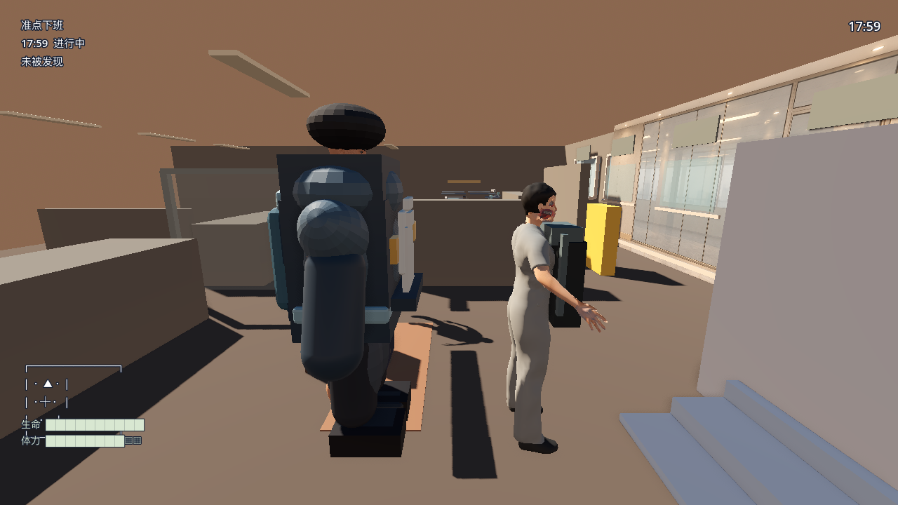

MakeHuman P0 人物候选视觉审阅
视觉状态：unverified 候选仅用于隔离预览、动作接口和镜头调校，不进入正式运行时或发布候选树。
本页不是人工签收表。没有目标设备截图、动作过程截图和逐项结论，不得把候选标记为通过。
office-06 三图对照



当前证据
- 候选 GLB：
makehuman_office_worker_candidate_recolor.glb - 候选哈希：
f0de96ac46b5134f86a6049edbec8c243cb7bd22444cfc2a774bb0a7bcd71189 - 骨骼契约：待机、行走、搜索、警觉均已在真实
Skeleton3D上产生旋转变化。 - 视觉未通过原因：人物比例、脸部气质、服装细节、手臂比例、动作姿态和环境材质仍与参考帧存在明显差异。
- 发布边界：
release_allowed=false；候选不复制到gta-reference-runtime/。
下一次签收必须补齐
- 可用图形环境下的待机、行走、搜索、警觉真实动作截图。
- 办公室近景、侧面行走、背包交互三个固定镜头。
- Windows 10/11 目标设备截图与性能记录。
- 人物比例、服装、面部、材质和动作逐项人工结论。